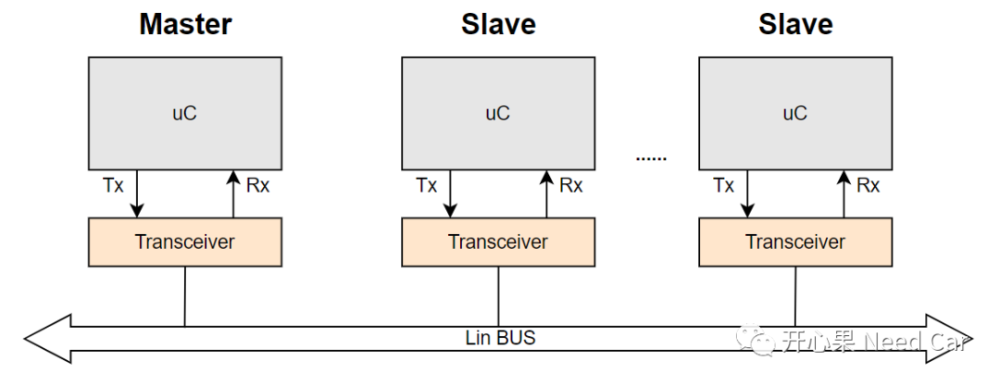
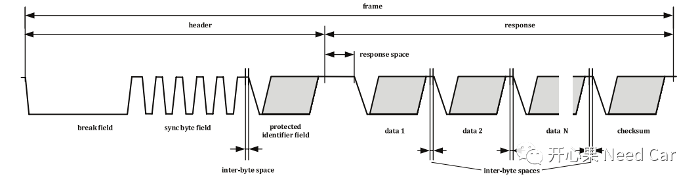
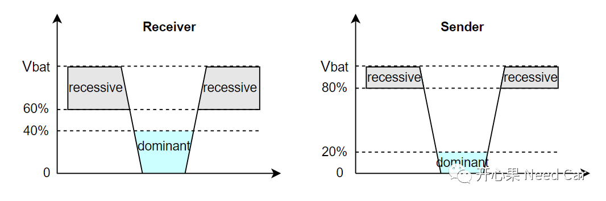
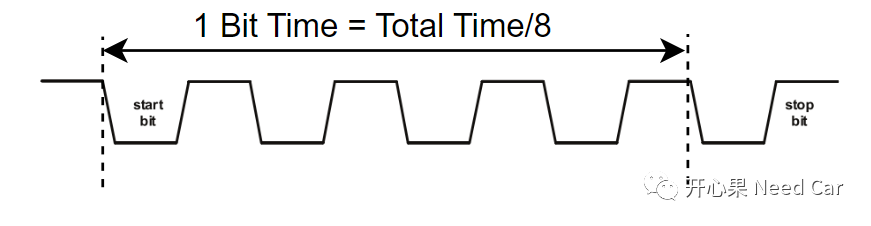
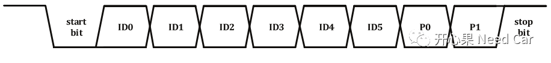
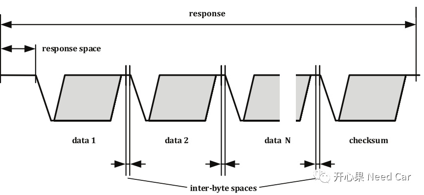
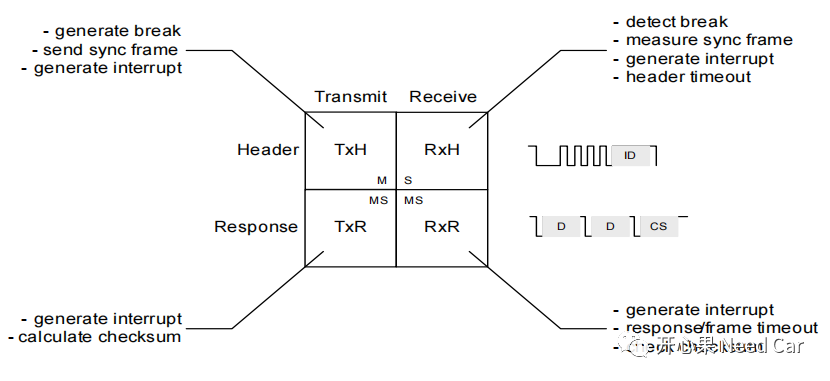
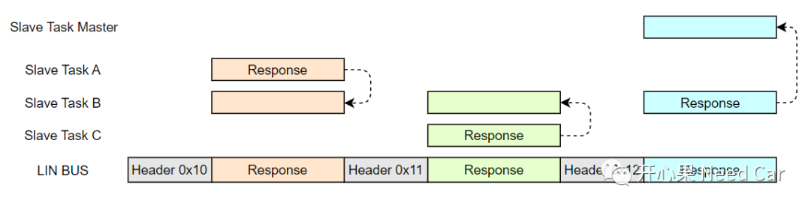

虽然Lin总线的通信速率不高，工程中，最高的速率也就19200bps。但是，Lin总线依然在整车拓扑中被广泛使用，为什么呢？答：成本。Lin总线，作为CAN总线的补充衍生而来。对于一些实时性、安全性要求不高的场景（eg：空调、座椅、门窗、后视镜），可以使用价格相对低廉的Lin总线，以此降低整车成本。本文，从Lin Frame开始，聊一聊Lin。
Lin总线和CAN总线一样，是串行通信总线。不同于CAN总线的双绞线，Lin的物理连接，使用单线连接，Lin总线的网络拓扑如下所示：

一个Lin网络拓扑中，受限于电气特性，一般会约束通信节点的数量，eg：16个。
学习任何总线，都需要清楚其链路层的报文格式，也就是"Frame"。对于Lin总线的学习，最权威的规范莫过于17897，Lin Frame的讲解主要在Part3部分。Lin Frame结构如下所示：

如上图，Lin Frame主要由两部分组成：Header + Response。
（一）Header
Header包含三个Field：Break Field、Sync Byte Field、Protected Identifier Field。Break Field：间隔域。由Master发送，表示一个新的Lin Frame的开始，至少由13 Bit的显性位组成，之后跟至少1Bit的隐性位，如下所示：Lin总线的显性（dominant）和隐性（recessive）不同于CAN总线，由于Lin总线是单线通信方式，没有压差的概念。在Lin总线中，接收端（Receiver）将高于Vbat 60%的电压看作隐性，将低于Vbat 40%的电压看作显性；对于发送端，将高于Vbat 80%的电压看作隐性，将低于Vbat 20%的电压看作显性。如下所示：

Sync Byte Field：同步域，主要作用是：协调接收端识别发送端的通信速率。按照协议规范，此处固定为0x55。接收端判断同步域开始和结束的两个下降沿，再除以8就可以算出发送端每个Bit的时间长度。
Protected Identifier Field：此域包括frame identifier和parity，这两个部分构成了常说的PID。frame identifier：报文的唯一标识，由6个Bit组成。6个bit可以表示的数据范围0x00~0x3F；parity：奇偶校验，由两个Bit组成。frame identifier和parity在Protected Identifier Field中的Mapping如下所示：
Lin通信中，请求只能Master发起，即发送Header，Slave响应主节点请求。各从节点根据Header中的ID来识别是否需要响应。Lin总线的Response部分包括数据和Checksum，数据最大可以传送8 Byte。Header和Resposne之间有一个响应间隔（response space），每个数据字节之间有inter-byte space。Response格式如下所示：
对于间隔空间（space），对应到具体的Lin Controller，可以根据项目需求配置，如下为一个Lin Frame的Maximum Bit示例：
Master可以处理三种类型的信息：发送帧头（TxH）、发送响应（TxR）、接收响应（RxR）；Slave也可以处理三类信息：接收帧头（RxH）、发送响应（TxR）、接收响应（RxR）。如下所示：

Lin总线的通信模式：主从模式。即：Master发送Header，Slave或者Master给出响应（Response）。
Lin通信启动以后，Master节点先发送Header 0x10；
- Slave A识别0x10，需要给出响应（Response）。同理，其他节点也需要识别0x10，并给出对应的动作（响应、接收响应、忽略）；
- Master节点按照时序，继续发送Header 0x11;
- Slave C识别0x11，需要给出响应（Response）。同理，其他节点也需要识别0x11，并给出对应的动作（响应、接收响应、忽略）；
- Master节点按照时序，继续发送Header0x12;
- Slave B识别0x12，需要给出响应（Response）。同理，其他节点也需要识别0x12，并给出对应的动作（响应、接收响应、忽略）；
1、Slave A给出0x10报文响应，Slave B接收0x10报文的响应，其他节点忽略此信息；2、Slave C给出0x11报文响应，Slave B接收0x11报文的响应，其他节点忽略此信息；3、Slave B给出0x12报文响应，Slave Master接收0x12报文的响应，其他节点忽略此信息。
点击下方关注，一起聊聊Autosar/嵌入式，如果需要，联系作者进群，给你更专业的解答